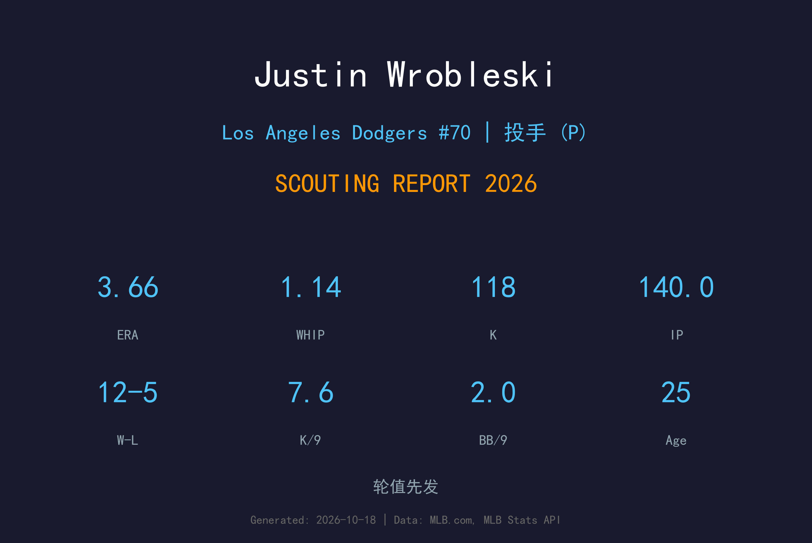
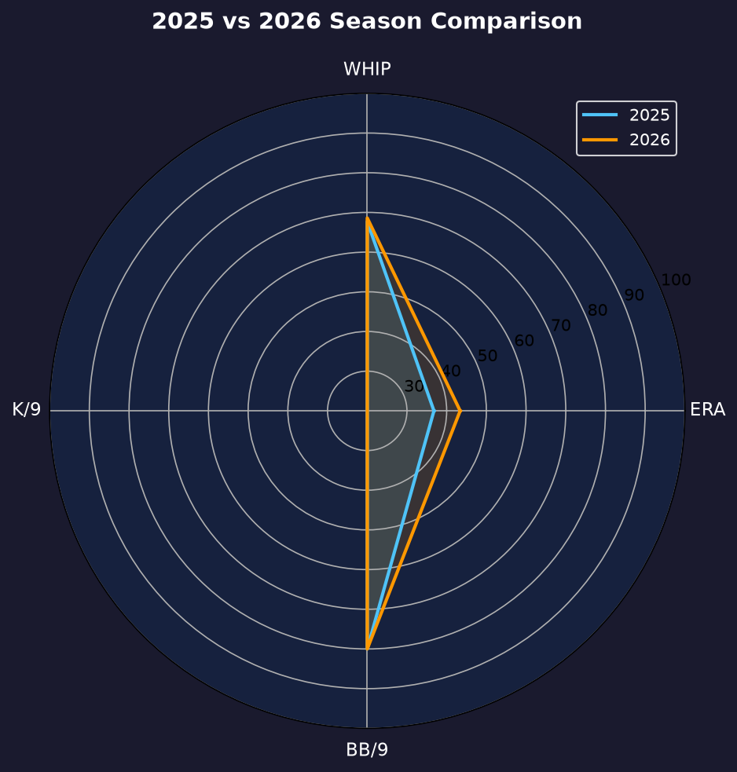
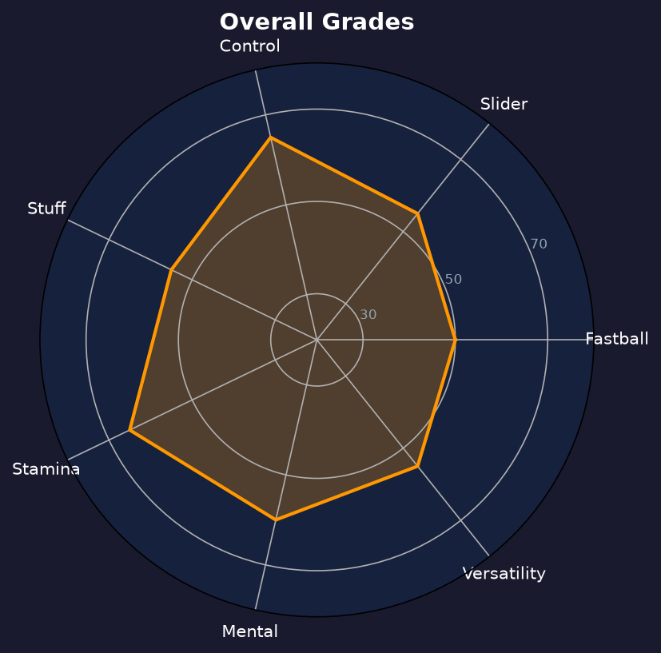

Los Angeles Dodgers #76 | 左投（先发/长中继） | 左投 / 左打 | 轮值铁人

Justin Wrobleski 是2026年道奇轮值最大的惊喜，从替补长中继一跃成为 140 局的轮值铁人。他以极低的保送率与扎实的四球种体系，稳稳吃下了球队因伤病空出的先发局数。
2026年他28场出赛（22场先发），缴出12胜5败、3.66 ERA、1.14 WHIP，140局118次三振仅31次保送（1.99 BB/9）。胜场数 12 场仅次于山本，是球队二号胜投。
26岁的 Wrobleski 已经证明了自己不是"临时顶替"，而是货真价实的轮值成员。他的球速不惊人，但控球与球种搭配让他能一次次通过打线三轮。2027年他的目标是彻底锁定先发身份，并向 180 局迈进。
在道奇完成 MLB 首秀，之后于小联盟与大联盟之间来回，等待机会。
140局、12胜，从 swingman 转型全职先发，成为道奇轮值伤病潮中的定海神针。

| 赛季 | G | GS | W-L | ERA | IP | SO | BB | WHIP |
|---|---|---|---|---|---|---|---|---|
| 2025 | 24 | 2 | 5-5 | 4.32 | 66.2 | 76 | 17 | 1.23 |
| 2026 | 28 | 22 | 12-5 | 3.66 | 140.0 | 118 | 31 | 1.14 |
局数从66.2暴增至140.0，ERA 与 WHIP 双双下降——工作量翻倍、效率反升的罕见案例。
主战球种，占全部配球的 49.1%，均速 94.7 mph。直上直下的四缝线速球，负责抢好球数与建立球数领先，是所有配球的基准。
常用武器，占全部配球的 28.1%，均速 86.6 mph。传统滑球横向位移锐利，是两好球后的主要挥空武器。
辅助配球，占全部配球的 8.3%，均速 94.0 mph。伸卡球下沉明显，主要用于制造滚地球、压低长打率。
辅助配球，占全部配球的 5.0%，均速 85.6 mph。变速球靠与速球的速差取命，主要用来对付反侧打者。
偶尔使用，占全部配球的 4.6%，均速 75.1 mph。曲球落差大，用于改变打者视线高度与击球节奏。
偶尔使用，占全部配球的 3.4%，均速 84.9 mph。横扫滑球比传统滑球横向位移更大，球路横扫进垒，对同侧打者威胁极大。
1.99 BB/9 是道奇轮值最低之一，K/BB 比 3.81 仅次于山本。他几乎从不白白送打者上垒，这也是他能在被轰21支全垒打的情况下仍维持 3.66 ERA 的原因——大多数全垒打都是 solo shot。
2025年他主要是长中继与偶尔先发，2026年在 Glasnow、Snell 等人轮流伤病的情况下，他 permanent 转入轮值并交出 22 场先发。他的 stamina 与 recovery 能力让教练团敢于让他连续先发。
12胜5败、140局，这是典型的"机会留给准备好的人"的故事。他的 ERA 在轮 rotation 中排第三（次于山本与 Glasnow），以第六人的身份交出二号胜投的成绩单，是道奇2026年最成功的内部挖潜。

用控球与耐久度立足的轮值黑马
B 级 / 轮值中流砥柱
道奇 2026 季后赛战绩：NLDS 3-1 晋级、NLCS 0-4 止步。
| G | IP | ERA | WHIP | SO | BB | H | HR |
|---|---|---|---|---|---|---|---|
| 1 | 2.1 | 3.86 | 1.29 | 4 | 0 | 3 | 0 |
Justin Wrobleski 的2027赛季目标是彻底锁定先发轮值位置。山本、Glasnow、Sasaki、Snell 的竞争激烈，但他2026年的 140 局成绩单足以让教练团无法忽视。
2026：12-5、3.66 ERA、140IP——从 swingman 到轮值铁人的完美跳跃
2027：目标 170+ 局、ERA 3.50 以下、首次 150K
2028+：若控球持续进化，有望成为道奇轮值的长期三号或四号
Justin Wrobleski 出生于德克萨斯州，是道奇自家培养的左投——2021年被道奇选中后，他在小联盟系统稳步成长，2024年登上大联盟。他的职业生涯起步并不起眼，以长中继与"第六人"身份在 roster 边缘徘徊。
2026年是他的 breakout 之年。当道奇轮值接连遭遇伤病，他抓住机会，用一场又一场的质量先发把"临时顶替"变成了"永久职位"。他的故事是道奇投手开发体系的成功案例——不追求耀眼的球速，而是把控球与耐久度打磨到极致。
场外的 Wrobleski 以谦逊与勤奋著称。他的家乡德州背景与道奇的多元化更衣室相得益彰，队友们亲切地称他为"轮值铁人"。